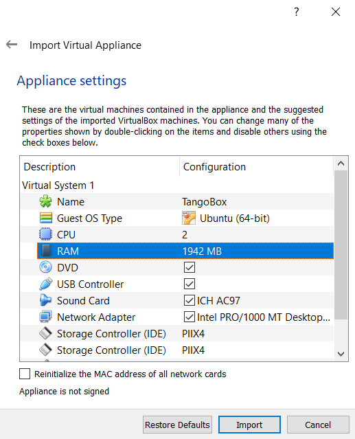

TangoBox 9.2¶
TangoBox is a VM image running Tango Controls system and its various tools. It is intended to be used for demonstration and training. It also simulates distributed deployment by using Docker.
What is installed¶
Below there is list of provide packages/features. Please note that some of them are installed as docker container and maybe switched off (stopped) and requires to be switched on for being explored, see Switching containers on and off
- Tango 9.2.5
- PyTango 9.2.2
- Taurus 4.2.2
- QTango
- iTango
- Tango Access
- JupyTango
- PANIC
- Bensikin
- Mambo
- Docker
- Linac system simulation (as docker container tangobox-sim)
- HDB/TDB, SNAP DS (as docker container tangobox-archiving)
- HDB++ (as docker container tangobox-hdbpp)
- SerialLine, Modbus and PyPLC device server (as docker container tangobox-com)
- mTango + restAPI, Tango WebApp (as docker container tangobox-web)
- E-giga (as docker container tangobox-egiga)
- PyAlarm DS on each container
- PyCharm
- Visual Studio Code
- ModbusPal to simulate Modbus
- Sardana 2.3.2
First steps¶
First of all you have to download latest release of VirtualBox. It can be downloaded from here . Simply install it and start the program.
TangoBox is released in .ova extension so it can be easily imported.
Select import and choose downloaded TangoBox file
If you want, you can change VM’s configuration (i.e graphics, RAM). It is highly recommended to increase default RAM size
A virtual machine settings window.
You may change number of CPUs and increase RAM size. Memory size has major impact on VM performance.
Wait for VirtualBox to import machine
After importing the VM image to VirtualBox you may start it.
- Username is: tango-cs
- Password is: tango
tango-cs user has sudo rights, so he may invoke commands as superuser with command sudo.
You may explore the Tango Controls feature by clicking related shortcuts on the Desktop.
Note
Plese note that some shortcuts are related to features running on containers. Please start related container first. See the following section.
Switching containers on and off¶
Some of the features of Tango are provided inside pre-build docker containers. These can be switched on and off by starting or stopping related containers. Containers behave similar to virtual machines with they own network cards and operating system stack, however, lacking full separations.
To start a container, open terminal and invoke docker start {container-name}. For example, to star a linac simulation use the following statement:
docker start tangobox-sim
To stop a container, open terminal and invoke docker stop {container-name}. For example, to stop a linac simulation use the following statement:
docker stop tangobox-sim
To see which containers are running please, call docker ps
Deployment structure¶
Network¶
Containers are created withing their own subnet: 172.18.0.0/16. The network is called tango_nw The subnet was created with the following docker command:
docker network create --driver=bridge --subnet=172.18.0.0/16 --opt com.docker.network.bridge.enable_icc=true \
--opt com.docker.network.bridge.host_binding_ipv4="0.0.0.0" --opt com.docker.network.bridge.mtu=1500 \
--opt com.docker.network.bridge.enable_ip_masquerade=true tango_nw
Containers are assigned static IPs. List of the IPs assignment maybe seen in /etc/hosts. Use command
cat /etc/hosts to see its contents.
Containers and images dependency¶
Each container is based on its image. All images are already build but, if neccessary, Dockerfiles are stored in home/Dockerfiles
directory. Below is the list of all containers and corresponding images:
| Container | Image | Remarks |
|---|---|---|
| tangobox-com | com | |
| tangobox-sim | sim | |
| tangobox-archiving | archive | |
| tangobox-hdbpp | hdbpp | |
| tangobox-web | web | |
| tangobox-egiga | egiga | |
| tangobox-sardana | sardana | |
| base | Base container | |
| ubuntu | Ubuntu image to build others |
Some device servers may be stopped when launching containers. It is so to get better performance (high cpu and ram usage). To control and start/stop particular DS according to your needs, use Tango Manager (Astor) to it.
Example applications¶
Modbus simulation¶
To simulate Modbus, we suggest to use ModbusPal. To do so, use ModbusPal (simulation) desktop shortcut. Once it is started, declare new modbus slave by clicking ADD. Choose 1 and name it 10.0.2.15. Now click “eye” button in modbus slaves section and add at least 10 holding registers. You can change their values according to your needs.
After that, use RUN button to start simulation. Values in registers can be changed by clicking “eye” button in Modbus slaves section.
Keep in mind that in ModbusPal, registers are counted from 1 while on DS from 0!
To monitor changes, use ATKPanel started from Jive. Both ModbusComposer and PyPLC have two attributes configured:
- ModbusComposer: Temperature uses 4th; Pressure uses 5th register in ModbusPal
- PyPLC: Voltage uses 6th; Flow uses 7th register in ModbusPal
View on a ModbusComposer device and configured ModbusPal simulator.
JupyTango¶
JupyTango is a Jupyter featuring Tango related kernels. With JupyterLab you may interact and do scripting for Tango through a web browser.
Browser window with JupyTango in action
In case you want to try it, here’s the procedure:
- start jupyterlab using our dedicated script: jupytango
- a new browser tab is automagically opened with the right URL:
localhost:8888/lab?. Please be patient, it may take a while on VM. - the very first connection to the service requires a ‘token’ which is printed in the jupytango console
- once in jupyterlab, click the JupyTango icon to open a notebook with the appropriate kernel
- enjoy!
Here are the JupyTango additions to itango:
Plotting a tango attribute
Syntax:
pta [options] <tab for device selection> + <tab for attribute selection>
Supported options:
- -w or –width: plot width in pixels
- -h or –height: plot height in pixels
Monitoring a tango attribute: Syntax:
tm [options] + <tab for device selection> + <tab for attribute selection>
Supported options:
- -w or –width: plot width in pixels
- -h or –height: plot height in pixels
- -p or –period: plot refresh period in [0.1, 5] seconds - defaults to 1s
- -d or –depth: scalar attribute history depth in [1, 3600] seconds - defaults to 900s
You can try to kill the monitored device will the JupyTango monitor is running to see how errors are handled.
JLinac and Elinac simulation¶
To start simulation, you need to run tangobox-sim container (use docker start tangobox-sim to start it from a terminal). It is also important to make sure that all related device servers are running. The easiest way to do it is to check it in Astor - a bulb next to tangobox-sim should be green.
Don’t worry about warnings during Elinac’s initialization.
JLinac simulation running.
HDB/TDB/SNAP Archiving (Mambo, Bensikin)¶
Prior to use HDB/TDB (Mambo) or SNAP (Bensikin) you need to make sure that the tangobox-archiving container and related device servers are running:
- Call docker start tangobox-archive on a terminal.
- Start Astor and check if the tangobox-archive node is green.
Then, you may start Mambo or Bensikin by clicking icons on the desktop.
Screen of running Mambo
HDB++ Archiving¶
To use HDB++ and its tools ( HDB Configurator and HDB Viewer) please make sure that the tangobox-hdbpp container and related device servers are running:
- Call docker start tangobox-hdbpp on a terminal.
- Start Astor and check if the tangobox-hdbpp node is green.
Then, you may start HDB Configurator or HDB Viewer by clicking icons on the desktop.
E-giga¶
E-giga is a web application for archiving data visualization (HDB/TDB and HDB++). The TangoBox deployment uses HDB/TDB.
E-giga in a web browser window
To use e-giga following conditions must be fulfilled:
- tangobox-archive and tangobox-web containers must be started and archiving device servers must be running
- use i.e. Mambo to enable data archiving for HDB database. It is required. If you do not see any attributes in E-giga it is probably due to archiving being disabled. Check with Astor if the tangobox-archive LED is green and with Mambo if there are any attributes configured to be archivied.
To open browser with E-giga click on the relate desktop icon.
Note
Please keep in mind that you should not rebuild tangobox-web image because its configuration is not included in Dockerfile (it requires in-container config).
Tango WebApp¶
Tango may be available through a web browser. Tango WebApp is a general purpose Tango web application. You may try it on the TangoBox.
A screenshot of Tango WebApp in a browser
To play with Tango WebApp make sure that the ‘tangobox-web` container is running (use docker start tangobox-web to start it from a terminal). Then, you may open a browser with a related desktop icon. Use username tango-cs and password tango to log-in.
REST API¶
Tango Controls specifies REST API interface and provides its reference implementation. For details see REST API documentation
The TangoBox comes with REST API installed. The tangobox-web container must be started to play with it. Invoke docker start tangobox-web.
Related deskto icon opens a web browser pointing to REST API interface. The REST server requires authentication. User is tango-cs and password is tango.
A web browser window presenting JSON response of the Tango REST server
If you would like to play with it with other tools (Python, curl) it is avaialabe at the following address: http://tangobox-web:8080/tango/rest/rc4/hosts/tangobox-vm/10000.
Note
Please keep in mind that you should not rebuild tangobox-web image because its configuration is not included in Dockerfile (it requires in-container config).
Sardana¶
Sardana is a software suite for Supervision, Control and Data Acquisition in scientific installations. I t aims to reduce cost and time of design, development and support of the control and data acquisition systems. For more information about it please refer to Sardana documentation.
SardanaGUI in action
To play with Sardana the tangobox-sardana container has to be started. Open a terminal and call docker start tangobox-sardana. Then, you may double-click the SardanaGUI icon on the desktop or run it from a terminal (type SardanaGUI).